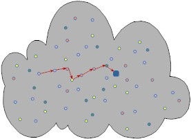
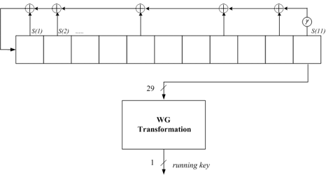
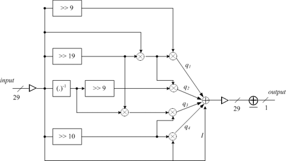
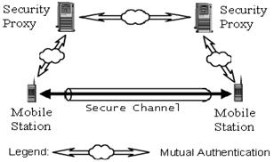
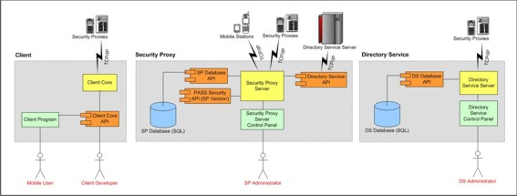

Introduction
OpenECC is a software package that implements ECC-based protocols for Zigbee Smart Energy 1.x and 1.2 applications. It provides an implicit certificate scheme (ECQV), a key exchange protocol (ECMQV), and a digital signature scheme (ECDSA).
OpenECC is intended for Zigbee platforms based on ARM Cortex-M3 processors. The current version is implemented in C and takes into account both speed and memory optimization techniques. OpenECC supports SECG recommended 163-bit and 233-bit Koblitz curve sect163k1 and sect233k1.
For questions please contact Dr. Xinxin Fan at fan@openecc.org.
OpenECC is intended for Zigbee platforms based on ARM Cortex-M3 processors. The current version is implemented in C and takes into account both speed and memory optimization techniques. OpenECC supports SECG recommended 163-bit and 233-bit Koblitz curve sect163k1 and sect233k1.
For questions please contact Dr. Xinxin Fan at fan@openecc.org.
Download
License
Copyright 2012 Xinxin Fan ‹fan@openecc.org›
All rights reserved.
Redistribution and use in source and binary forms, with or without modification, are permitted provided that the following conditions are met:
- Redistributions of source code must retain the above copyright notice, this list of conditions and the following disclaimer.
- Redistributions in binary form must reproduce the above copyright notice, this list of conditions and the following disclaimer in the documentation and/or other materials provided with the distribution.
THIS SOFTWARE IS PROVIDED BY THE COPYRIGHT HOLDERS AND CONTRIBUTORS "AS IS" AND ANY EXPRESS OR IMPLIED WARRANTIES, INCLUDING, BUT NOT LIMITED TO, THE IMPLIED WARRANTIES OF MERCHANTABILITY AND FITNESS FOR A PARTICULAR PURPOSE ARE DISCLAIMED. IN NO EVENT SHALL THE COPYRIGHT HOLDER OR CONTRIBUTORS BE LIABLE FOR ANY DIRECT, INDIRECT, INCIDENTAL, SPECIAL, EXEMPLARY, OR CONSEQUENTIAL DAMAGES (INCLUDING, BUT NOT LIMITED TO, PROCUREMENT OF SUBSTITUTE GOODS OR SERVICES; LOSS OF USE, DATA, OR PROFITS; OR BUSINESS INTERRUPTION) HOWEVER CAUSED AND ON ANY THEORY OF LIABILITY, WHETHER IN CONTRACT, STRICT LIABILITY, OR TORT (INCLUDING NEGLIGENCE OR OTHERWISE) ARISING IN ANY WAY OUT OF THE USE OF THIS SOFTWARE, EVEN IF ADVISED OF THE POSSIBILITY OF SUCH DAMAGE.
Redistribution and use in source and binary forms, with or without modification, are permitted provided that the following conditions are met:
- Redistributions of source code must retain the above copyright notice, this list of conditions and the following disclaimer.
- Redistributions in binary form must reproduce the above copyright notice, this list of conditions and the following disclaimer in the documentation and/or other materials provided with the distribution.
THIS SOFTWARE IS PROVIDED BY THE COPYRIGHT HOLDERS AND CONTRIBUTORS "AS IS" AND ANY EXPRESS OR IMPLIED WARRANTIES, INCLUDING, BUT NOT LIMITED TO, THE IMPLIED WARRANTIES OF MERCHANTABILITY AND FITNESS FOR A PARTICULAR PURPOSE ARE DISCLAIMED. IN NO EVENT SHALL THE COPYRIGHT HOLDER OR CONTRIBUTORS BE LIABLE FOR ANY DIRECT, INDIRECT, INCIDENTAL, SPECIAL, EXEMPLARY, OR CONSEQUENTIAL DAMAGES (INCLUDING, BUT NOT LIMITED TO, PROCUREMENT OF SUBSTITUTE GOODS OR SERVICES; LOSS OF USE, DATA, OR PROFITS; OR BUSINESS INTERRUPTION) HOWEVER CAUSED AND ON ANY THEORY OF LIABILITY, WHETHER IN CONTRACT, STRICT LIABILITY, OR TORT (INCLUDING NEGLIGENCE OR OTHERWISE) ARISING IN ANY WAY OUT OF THE USE OF THIS SOFTWARE, EVEN IF ADVISED OF THE POSSIBILITY OF SUCH DAMAGE.
Introduction
Radio frequency identification (RFID) is a technology for the automated identification of physical
entities using radio frequency transmissions. Typically, RFID systems consist of RFID devices or
so called tags, RFID readers or interrogators, and backend networks. An RFID tag is a simple
and low-cost electronic device (transponder) that is attached to a physical object for wireless data
transmission. It transmits data over the air in response to interrogation by an RFID reader. An
RFID reader is a more powerful device (transceiver) that can queue data stored in tags. Multiple
readers can then connect to a network that acts as a data processing subsystem and database. In the
past ten years, RFID systems have gained popularity in many applications, such as supply chain
management, library systems, e-passports, contactless cards (e.g., proximity cards, automated toll-
payment transponders, and payment tokens), identification systems, and human implantation (such
as medical-record indexing, and physical access control). Future applications could include smart
appliances, shopping, and medication compliance monitoring. RFID is one of the most promising
technologies in the field of ubiquitous and pervasive computing. Many new applications can be
created by embedding an object with RFID tags. However, the rapid development of RFID systems
raises serious privacy and security concerns that could prevent the benefits of RFID technology
from being fully utilized.
The concerns about RFID systems arise from a) privacy concerns of users about clandestine physical tracking and inventorying of tags; b) authentication problems from counterfeit or cloned tags; and c) communication attacks: jamming, traffic analysis, spoofing, eavesdropping, relay or man-in-the-middle attacks, denial of service attacks, and side-channel attacks, all of which are easy to launch for both RFID tags and readers. Overcoming these concerns will be a significant challenge, because RFID tags do not have sufficient computational power and memory capacity to support standard cryptographic primitives.
The concerns about RFID systems arise from a) privacy concerns of users about clandestine physical tracking and inventorying of tags; b) authentication problems from counterfeit or cloned tags; and c) communication attacks: jamming, traffic analysis, spoofing, eavesdropping, relay or man-in-the-middle attacks, denial of service attacks, and side-channel attacks, all of which are easy to launch for both RFID tags and readers. Overcoming these concerns will be a significant challenge, because RFID tags do not have sufficient computational power and memory capacity to support standard cryptographic primitives.
Research Topics
- Physical layer assisted privacy protection in RFID systems
- Lightweight crypto engine based core security functions for FRID Security
Introduction
The physical-layer security under the information-theoretic (perfect) security models can get exponentially close to perfect secrecy in theory. However, the information-theoretic security is an average-information measure. The system can be designed and tuned for a specific level of security¡ªe.g., with very high probability a block is secure, but it may not be able to guarantee security with probability 1. So any deployment of a physical-layer security protocol in a classical system would be part of a ¡°layered security¡± solution where security is provided at a number of different layers, each with a specific goal in mind. The physical-layer security can provide an additional layer of security for wireless networks. We investigate a novel MIMO aided security scheme. By exploiting an extra dimension provided by MIMO systems for adding artificial noise to the transmission process, which let the attacker¡¯s signal be a degraded version of the legitimate receiver¡¯s signal, the physical-layer security is enhanced as a result. We also investigate a novel framework for Physical layer Assisted message Authentication (PAA) under public key infrastructure (PKI) in wireless communication networks.
Research Topics
- Finding practical method to build the wire-tap channel model for multiple input multiple output (MIMO) and single input single output (SISO) system.
- Developing the wire-tap channel code close to capacity.
- Exploring to build a cross-layer framework for achieving fast and light-weighted message authentication for wireless networks in virtue of physical layer assisted message Authentication.
Introduction
Wireless sensor networks (WSNs) are innovative networks consisting of a large number of distributed, autonomous, low-power, low-cost, sensor nodes which cooperatively collect information through infrastructureless wireless networks, as illustrated in Figure 1. There are numerous applications for wireless sensor networks, and security is vital for many of them. However, WSNs suffer from many constraints, including low computation capability, small memory, limited energy resources, susceptibility to physical capture, and the lack of infrastructure, all of which impose unique security challenges and make innovative approaches desirable.

Figure 1: Wireless Sensor Networks
Figure 1: Wireless Sensor Networks
Preliminary Results:
Random Key Distribution for WSNsKey establishment is one of most important building blocks for security services. Currently random key predistribution approaches are prevalent in wireless sensor network. We design a new key predistribution protocol which combines basic random key predistribution with multi-hash chain mechanism. Comprehensive analysis shows that its security performance outweighs that of original scheme, with reasonable tradeoff of a few hash operations.
Mutual Entity Authentication in WSNs
Mutual entity authentication plays a significant role in achieving many security goals of wireless sensor networks. We developed a mutual entity authentication framework for wireless sensor networks. This framework is basically flexible combination sets of two previous elegant one-way authentication protocols---HB+ and HB#, with significant enhancements in terms of infeasibility of storage/communication requirement and extension to mutual authentication.
Node Clone Detection
Sensor nodes lack tamper-resistant hardware and are subject to the node clone attack. We introduce two approaches to detect the attack distributively. One is based on Distributed Hash Table (DHT). A Chord overlay network is built upon the sensor network, and provides the key-based routing, caching, and checking facilities for our protocol. A deterministic witness and additional memory-efficient, potential witnesses assure the good security properties. Furthermore, the mechanism of random round seeds limits the adversary's ability to conceal the clone by compromising witness nodes. The other is an innovative randomly directed exploration protocol, which does not demand any strong assumptions and is highly practical in the general sensor network applications.
Current Work
- Provably Secure LPN-based Authentication Protocols for Low-cost Devices
- Secure Data Aggregation in Wireless Sensor Networks
Motivation
Recently many people in the media, industry, and academia are talking about ubiquitous computing and ad hoc networking, but it seems that everybody has a different understanding of the topic. Some people associate ad hoc networks with Personal Area Networks (PANs), as for instance wireless communications among PDA's, cellular phones, and laptops using the Bluetooth protocol, whereas others might imagine military applications, such as exploring enemy territory by the use of sensor networks. The number of applications are countless.So what are ad hoc networks? What is their infrastructure? What are their properties? What are the applications of such networks and do those applications require the implementation of any security? All these questions have not been sufficiently answered yet. Clear definitions of architecture, properties, and security requirements can still not be found in the literature. Although some applications are already implemented, the desired security properties have still not been completely achieved.
Introduction
With the increasing number of applications that involve wireless communication among mobile devices, the demand for implementing security in such systems becomes inevitable. Networks that consists of mobile devices that spontaneously form a wireless network are usually referred to as ad hoc networks.We believe that there are four main security problems that need to be dealt with in ad hoc networks:
- the authentication of devices that wish to talk to each other
- the secure establishment of a session key among the authenticated devices
- the secure routing in multi-hop networks
- the secure storage of key data in the devices
Preliminary Results and Current Work
A list of some of our research topics on ad hoc network security:
- identifying and defining properties, parameters, architectures, and security requirements of ad hoc networks
- deriving design goals for all protocols to be implemented in ad hoc networks
- introducing a general protocol framework for authentication and key establishment protocol in ad hoc networks
- introducing several symmetric, hybrid and asymmetric authentication models for authentication and key establishment
- analyzing the performance of some proposed ad hoc network protocols
- analyzing the security of proposed ad hoc network protocols
- developing efficient authenticated key agreement protocols for ad hoc networks
- developing efficient protocols for pre-authentication
- implementing proposed and new ad hoc protocols for analysis
References and slides on the security in ad hoc networks
- References for Authentication, Key Exchange and Key Revocation in Mobile Ad Hoc Networks
- Some papers about security in ad hoc networks can be found on Katrin Hoeper's homepage http://www.comsec.uwaterloo.ca/~khoeper
- Katrin Hoeper. "Security Models and Mutual Entity Authentication in Ad Hoc Networks", proposal presentation [HTML].
- For details, please see the poster [PDF].
Abstract
We propose a new synchronous stream cipher, called WG cipher. The cipher is based on WG (Welch-Gong) transformations. The WG cipher has been designed to produce keystream with guaranteed randomness properties, i.e., balance, long period, large and exact linear complexity, 3-level additive autocorrelation, and ideal 2-level multiplicative autocorrelation. It is resistant to Time/Memory/Data tradeoff attacks, algebraic attacks and correlation attacks. The cipher can be implemented with a small amount of hardware.

Figure 2: Block diagram of WG stream cipher
Figure 2: Block diagram of WG stream cipher

Figure 3: Welch Gong Transformation
Figure 3: Welch Gong Transformation
For more information
- Contact Yassir Nawaz, website at http://www.comsec.uwaterloo.ca/~ynawaz/
- Read the full paper: Yassir Nawaz and Guang Gong, "The WG stream cipher" , submitted to ECRYPT STREAM CIPHER PROJECT, [PDF]
- Got to ECRYPT STREAM CIPHER PROJECT website at http://www.ecrypt.eu.org/stream/, C code also available at this site
Abstract
Current authentication technologies are commonly based asymmetric encryption techniques such as digital signatures. To be able to employ these techniques requires a significant amount of computing resources, which are uncommon to many lightweight mobile devices such as cell phones and personal digital assistants (PDAs). It is therefore currently infeasible or uneconomical to implement mutual authentication services between these devices. A new protocol called “Controlled Proxy-Assisted Secure End-to-End Communication Protocol” was proposed by Professor Hung-Yu Lin to solve the problem. The goal of a Fourth Year Design Project at UW of Jimmy Choi, Kenneth Choi, Kenric Li, and Truman Ng supervised by Prof. Guang Gong, was to build a secure communication system that employs such proxy-assisted protocol as illustrated in Figure 4.

Figure 4: Mutual authentication between mobile stations using security proxies.
Figure 4: Mutual authentication between mobile stations using security proxies.
Introduction
A new protocol called "Controlled Proxy-Assisted Secure End-to-End Communication Protocol" was proposed by Professor Hung-Yu Lin to solve the problem. This protocol removes the computing requirement that imposes on mobile devices by introducing an entity called the Security Proxy. The significance of the Security Proxy is that it has the computing resources to perform asymmetric authentication very fast. Thus the hard computatio steps are shifted from very constrained devices (the mobile stations) to a more powerful trusted server (security proxie). When mobile users want to establish a secure session, the Security Proxy performs the mutual authentication for the mobile devices and enables them to establish a session key. The session key is then used to encrypt all further communications between the mobile station for the period of one sessio nusing symmetric and thus cheap encryption schemes.
Implementation
The proxy assisted protocol can be implemented in many different languages using different SDKs. In the fourth year project the students concluded to use .Net framework and Windows Networking SDK to implement the server part and to use Microsoft SQL for the database.The architecture of the components is shown in Figure 5. The implementation was successfully demonstrated on the 4th year design symposium on 2 mobile clients in 2 PDAs.

Figure 5: Architecture of PASS components.
Figure 5: Architecture of PASS components.
Some papers and slides on PASS
- H. Lin. "Controlled Proxy-assisted Secure End-to-End Communication", Technical Report, CORR 2002-31, University of Waterloo, 2002. [PS]
- Jimmy Choi, Kenneth Choi, Kenric Li, Truman Ng. "Proxy assisted security service", Fourth Year Design Project, ECE University of Waterloo, 2004. Presentation [HTML]
- A large number of references of password-based protocols can be found on Dr. Shaoquan Jiang's website.
Abstract
With the emergence of the 3G (third-generation) networks for mobile communications, data security becomes even more important. Designing cryptosystems that meet both the power contraints and computing constraints of mobile units is very challenging. The GH-PKC reduces the size of the modulus and speeds up the computations of the same degree of security as existing cryptosystems. Our research focus is on software implementation of the GH-PKC and analysis on its performance over the existing cryptosystems.
Introduction
The GH Public-key Cryptosystem (GH-PKC) was developed by G. Gong and L. Harn in 1999. This cryptosystem is based on the third-order linear feedback shift register (LFSR) sequences with a particular phase. Such a particular LSFR sequences are called a characteristic sequence. The elements of the sequences are taken from a finite field GF(q). The security of GH-PKS is based on the difficult of the solving discrete logrithm in the extension GF(q3) of GF(q).The part of the GH Diffie-Hellman (GH-DH) key agreement protocol was published in the proceddings of ChinaCrypto'1998 and the GH-DH together with the GH-RSA type was published in the November 1999 issue of IEEE Transactions on Information Theory.
Two important features of the GH-PKC:
- GH-PKC has the same modular size as the elliptic curve public-key system while achieving the same 1024 bit security level for q = p2 .
- GH-PKC can be resistant to power analysis attack and timer analysis attack without increasing cost of computation.
Implementation
Click here to try the GH-PKC online! (temporarily unavailable) [coded by Susana Sin]
Some papers and slides on the GH-PKCS
- S. Sin, Software Implementation of Gong-Harn Public-key Cryptosystem and Analysis, Master's Thesis, April 2004, Waterloo, University of Waterloo, supervised by G. Gong, Thesis (Appendices are removed)
- S. Sin, The GH-DSA, RIM-Seminar, October 2003, Slides on GH-DSA [HTML, PDF]
- S.Sin, Gong-Harn Public-key Cryptosystems, Poster
- G. Gong and L. Harn, A new approach for public key distribution, Proceedings of China-Crypto'98, May 1998, Chengdu, China (PS).
- G. Gong and L. Harn, Public-key cryptosystems based on cubic finite field extensions, IEEE Trans. on Inform. Theory, vol. 45, No.7, November 1999, pp. 2601-2605 [PS, PDF]
- Slides of the talk on the GH public-key cryptosystems at Queens University [PS], October 2000.
- G. Gong, L. Harn and H.P. Wu, The GH public-key cryptosystems, the Proceedings of the Eighth Annual Workshop on Selected Areas in Cryptography, Toronto, August 16-18, 2001. CORR 2001-35 [PS, slides].
- K. J. Giuliani, Generating large instances of the Gong-Harn cryptosystems, to be presented at the Conference on Cryptography and Coding, Dec. 17-19, 2001, Cirencester, UK, [PS].
- Roy Krischer, An implementation of the Gong-Harn Diffie Hellman key agreement protocol [PS], supervised Undergraduate Research Assistant, Spring 2001, Research Project Report.